Outline of map of Pan, the submerged continent
Outline of map of Pan superimposed on the Tharp Map
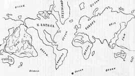
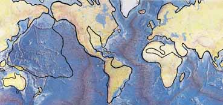
Outline of map of Pan, the submerged continent
Outline of map of Pan superimposed on the Tharp Map
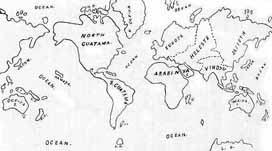
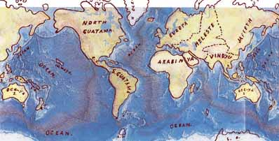
Outline Map showing the Names and Divisions of the Earth
Outline Map showing the Names and Divisions superimposed on the Tharp Map
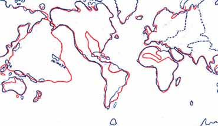
Contents :-
- Atlantis
- Lemuria
- Kumari Kandam
- Ta Rua — the Empire of the Sun
- The Lost Continent of Mu
- Churchward's Belief, and Oahspe
- The Oahspe 'History of the Flood'
- The Babylonian Story of the Deluge and the Epic of Gilgamish
- Studying the Ocean Floor for a Sign
List of Maps :-
- Outline of map of Pan (above)
- Outline of map of Pan superimposed on the Tharp Map(above)
- Outline Map showing the Names and Divisions of the Earth (above)
- Outline Map showing the Names and Divisions superimposed on the Tharp Map (above)
- Both Oahspe Maps superimposed
- Oceanus - the 'World Ocean'
- Kumari Kandam
- Churchward's Mu
- Geographical position of Mu
- Churchward's Mu and Oahspe's Pan superimposed
- Pacific Islands which would fit into the continent of Pan
- Map showing a of the eastern side of Pan and Easter Island
- Western Interior Seaway
- Colored map of Pan
- Location of Shem, Jaffeth and Ham, also Guatama (America) and Yista (Japan)
- World Ocean Floor by Bruce C. Heezen and Marie Tharp
- The Tharp map with Pan shown
- Pan's location on the Pacific Plate
- The world's tectonic plates
- The world's tectonic plates with Pan shown
- Ring of Fire with Pan shown
- Trenches of the Pacific Plate
- The Oahspe map of Pan scaled up and centered as best as possible over the Pacific Plate
- Japan's tectonic plates and the triple junction of five volcanic arcs
- Ryukyu Islands of Japan, Okinawa, Yonaguni and the Ryukyu trench.
- Age of oceanic crust
- Age of oceanic crust map with Pan superimposed
- Detail of Micronesia, Pacific Islands and Pan
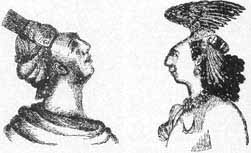
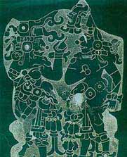
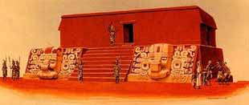
The whole country was said by him [Solon] to be very lofty and
precipitous on the side of the sea, but the country immediately about
and surrounding the city was a level plain, itself surrounded by
mountains which descended towards the sea ...
The surrounding mountains were celebrated for their number and size and
beauty, far beyond any which still exist
For the Greeks of Solon's time the Atlantic Ocean was a body of water that completely surrounded the world.
For this sea which is within the Straits of Heracles is only a harbour, having a narrow entrance, but that other is a real sea, and the surrounding land may be most truly called a boundless continent.
Poseidon and Cleito has five pairs of male children. "And the eldest, who was the first king, he named Atlas, and after him the whole island and the ocean were called Atlantis.
In Plato’s day Libya was the entire North African continent west of
Egypt (comparable to Europe). Asia was considered to stretch between Egypt
in the west, the Caucuses in the north, Arabia in the south, and India in
the east. Asia of Plato’s day might be compared to N America. This
suggests the former existence of an almighty landmass of gigantic
proportions, too big to fit in the Atlantic
Ocean.
It is believed that Plato invented the story in order to convey a
political and moral point about aggression violence and greed. It would
seem that to do this he merged tales of Minoans, and Bronze age
Mediterranean island warriors like that of Troy with a pre-existing
collective memory of a worldwide deluge that detroyed an ancient
civilization as a result of losing their virtue. Both Homer's account of
the Trojan war and Plato's (or Solon's) description of Atlantis mention a
fleet of 1,200 ships and the use of chariots and bronze weapons, and have
the Greeks hold back the onslaught, freeing the region from terror.
A comprehensive discussion of the Atlantis hypothesis is congressman
Ignatius Donnelly's 'Atlantis: the Antediluvian World', first published in
1882.
You can read or download the whole book at this link:
http://www.sacred-texts.com/atl/ataw/ataw303.htm
In 1939 Edgar Casey predicted that proof of Atlantis would be found off the coast of Bimini in 1968. 29 years later as propheciesed an underwater elevated roadway or wide wall 2000 ft long, with one end curving in a J-shape aligned in precise geometric patterns. The Bimini road appears to be manmade, and could have existed above land before the ice age ended. The myth of Atlantis serves also to spark our yearning for Utopia, even a heaven on earth.
“Born were noises bursting in the air, explosions from volcanoes that blew the earth to pieces. Ta Rua disintegrated and sank lower and lower into the eddying sea while the four winds howled from all directions. The earth quaked and quivered, shook and shivered, as volcanic explosions rent Ta Rua asunder. The swirling shifting ocean climbed the mountains, sucked in and swallowed up life as it climbed higher and higher above the homes of the inhabitants.”
This same source, while substituting 'Ta Rua' for Mu, uses Churchward's
claims as fact, saying "references to Ta Rua can be found in Mayan
writings housed in the British museum, a translation reads; 'the country
of the hills of earth--the Land of Mu was sacrificed. Twice up-heaved, it
disappeared during the night, having been constantly shaken by the forces
of the underneath. At last the surface gave way and the 10 Countries or
Tribes were torn asunder and scattered.'
[It turns out that Mayan writing is the Troano Manuscript, which had been
mistranslated.]
Before disappearing into the sea, the legendary continent of Ta Rua is
believed to have covered an area that would include present day Hawaii,
New Zealand, Tahiti, Samoa, and Easter Island. Various expressions of the
pre-Christian religion known as Tahunaism (not Huna) (thought to be a
remnant of the spiritual tradition of Ta Rua) can be found scattered
throughout these and other Pacific islands."
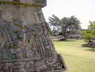
"Erected as a monument to the Motherland of Man, the Land to the West, to commemorate her memory and her destruction with all mankind thereon.
This report seems to come from Churchward's 'The Lost Continent of Mu',
in which he calls Mu the 'Empire of the Sun', and says: "The empire
received the name "Empire of the Sun. All followed the same religion, a
worship of the Deity through symbols."
and
"The Uxmal temple has a west facing inscription which reads:
Dedicated to the lands of the west, whence we came'."
also
"Man first came into being in Mu, then travelled west from India to
Egypt."
Oahspe tells us Pan was west of America, and was the motherland from where its chosen survivors brought us civilization.
[Mexico’s Xochicalco archaeological site is in the foothills of the Sierra Madre mountains, south of Mexico City. Xochicalco (meaning, “in the place of the house of flowers”) was occupied beginning around 200 B.C., and reached its apex architecturally between A.D. 700 and 1000, after the fall of Teotihuacán. Numerous stone outer buildings spread out on terraces at the foot of the ceremonial pyramid, from palaces, step-style pyramids, ball courts, a circular set of altars, and an underground observatory.]
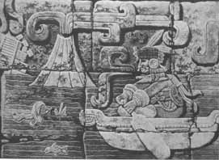
This Mayan stone relief carving shows a temple destroyed by an earthquake, a drowning man, an erupting vulcano, tidal waves (tsunami's), a man escaping in boat, and overall: a giant flood. The Inca's have a myth about being decendants of a destroyed civilization, of which this may be a portrayal. Most other ancient civilizations from all over the world have similar stories of a massive flood or similar disaster.I recently saw this website
http://www.jasoncolavito.com/1/post/2014/02/did-the-maya-depict-the-end-of-atlantis-at-tikal.html
from which I extracted the following:
Supposedly the piece was cut from atop a Maya
temple at Tikal and shipped to Berlin where it was destroyed during
World War II. That’s the story David Hatcher Childress tells in Lost
Cities of Atlantis (1996), derived from Peter Tompkins, who told it in
Mysteries of the Mexican Pyramids (1987). The only documentation of it
is this single “photograph,” which is almost certainly a drawing.
It was published in 1939 in Atlantis: Mother of Empires by Robert
Stacy-Judd, an English architect best known for working in the Mayan
Revival architectural style. An accomplished artist, he decorated his
buildings with imaginative art in the style of the ancient Maya. His
book was a mix of fact and fiction, and the illustration above was
almost certainly created by him as a fictional depiction of the
Atlantis, drawing on the similar claims of Ignatius Donnelly and
Augustus Le Plongeon.
The drawing appears as a plate opposite page 91 in the book (which was
reprinted by David Hatcher Childress for Adventures Unlimited in 2007)
with a caption describing it as a photograph of a bas-relief depicting
the sinking of Atlantis. Stacy-Judd’s discussion in the body of the text
gives more details. He starts by saying that the “photograph” is in his
own private collection.
The picture was taken by Teobert Maler in a remote and at the time
unknown spot deep in the jungles of Yucatan. Maler stated just prior to
his death that the recorded scene was but a portion of a continuous
frieze which surrounded the interior of an underground chamber.
The image is not from one of Maler’s innumerable published works but is
a secret image disclosed only in a deathbed confession. Stacy-Judd
claims only that Maler took a photograph of the frieze underground and
did not publish it.
Teoberto Maler was an Austro-German explorer who
traveled to Mexico with the Habsburg claimant to the Mexican throne, the
Emperor Maximilian. After the fall of the Empire, he spent the most of
his life documenting Maya ruins. The photograph Stacy-Judd attributes to
him does not match Maler’s published photographs, nor does the drawing
resemble Maler’s usual art style.
After reviewing hundreds of Maler’s photos, it’s apparent that the
Stacy-Judd image lacks the fine-grain details of the stone work we’d
expect to see in a real image. It contains elements not seen in typical
Maya art, including the crumbling pyramid and the modern arrangement and
use of perspective. Its lines are harder, squarer than typical Mayan
art, but much in keeping with the Art Deco-inspired Mayan Revival style
(also called Aztec Revival) favored by Stacy-Judd.
The claim that it was destroyed in World War II in Berlin can be traced
back no farther than Peter Tompkins. His claims contradicted those of
Stacy-Judd’s 1939 book, which never said anything about the frieze
leaving the Americas. Frank Joseph, in Survivors of Atlantis (2004)
asserts that it was found high up on the Central Acropolis at Tikal
before the section was removed and sent to Vienna where it was displayed
until the Soviets looted it in 1945. This seems to be a corruption of
Childress’s 1992 claim that Maler shipped the entire frieze from the
North Acropolis to Berlin where it was displayed until the Americans
bombed the museum in World War II, probably based on Joseph’s
understanding that Maler was Austrian, that the North Acropolis frieze
is still in Tikal, and that the Allies never bombed the Hofburg in
Vienna, where the Austrian Mexican antiquities collection is housed.
Why are there no in-situ photographs, or even photographs from the half
century it supposedly spent on display in Vienna? Why is there no museum
record?
Why does Joseph’s account disagree on every detail from that of
Stacy-Judd, who had claimed that Maler took the photo in secret, that
the frieze was underground, and that he confessed this only at the end
of his life?
It is believed that the Frieze illustrates the reason why the Mayans
left the mythical homeland of Tulan.
Part 3 of the Popol Vuh
tells of the creation of humans, migration, and first dawn. Animals gather
white and yellow corn from which the gods create Balam-Quitze, Jaguar
Night, Naught, and Wind Jaguar. Their four wives are later created while
they sleep. Their descendants travel to Tulán Zuiva to await the first
dawn. Tulán Zuyuá, the "Place of Seven Caves", is also
described in the K'iche' origin legend. Like the Popol Vuh, the 'Annals
of the Cakchiquels' also identifies the legendary Tulan as the place
from which they all set out, at least at one point in their various
migrations. The texts differs from the Popol Vuh in that it relates that
the Kaqchikel ancestors came to Tulan, ch'aqa palow "across the sea", from
r(i) uqajib'al q'ij, "where the sun descends, the
west." The Pacific ocean, and Pan, is west of Mexico.
There are similarities of the Popol Vuh to the Christian bible. Like the
story of Noah and the ark myth, a flood was brought about by the heart of
Heaven; a great flood was formed which fell on the heads of the wooden
creatures. As the Judaic prophets sometimes lost their way, so did the
Mayans. At the crossroads they were overcome. One of the four roads was
red, another black, another white, and another yellow. And the black road
said to them: I am the one you must take because I am the way of the Lord
- word of Hun Came. Like the tower of Babel myth, the speech of the tribes
changed; their tongues became different. They could no longer understand
each other clearly after arriving at Tulan. 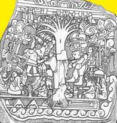
Izapa Stela 5, found in the region of Chiapas along the Guatemalan
border, dated 300-100 BCE, is known as the "Tree of Life" stone.
Mainstream Mesoamerican researchers indentify the central image as a
Mesoamerican world tree, connecting the sky above and the water or
underworld below. Linda Schele proposes that the stela records a creation
myth, with barely-formed humans emerging from a hole drilled into the
tree's left side. The associated seated figures are completing these
humans in various ways. Julia Guernsey Kappelman suggests the seated
figures are Izapa elites conducting ritual activities in a
"quasi-historical scene", which is placed in the context of the 'symbolic
landscape of creation'.
Others have interpreted the imagery to support theories of an African
origin, citing what appears to be a boat at the bottom of the scene. This
is done in support of a two-race Mayan-Olmec theory of Mesoamerica, one of
African origin and the other of Middle Eastern or Asiatic origins.
William Niven (1850-1937), mineralogist and archaeologist, came to the
United States in 1879 and worked as a mineralogist. In the early 1890s his
attention turned to the mineralogical exploration of Mexico. In 1911 Niven
discovered ancient ruins buried beneath volcanic ash near Azcapotzalco
just north of Mexico City. He established a private museum in Mexico City
with more than 20,000 exhibits.
He recovered the first in a series of unusual stone (andesite) tablets
bearing pictographs from his digs at San Miguel Amantla, Azcapotzalco, and
elsewhere in the Valley of Mexico in 1921. This discovery eventually
totaled more than 2,600 tablets with markings on them that Niven did not
recognize. All the tablets found had very similar markings and symbols.
They were eventually lost during the latter part of Niven's life, during
their attempted shipment from Mexico to the US. The only remaining
evidence, of which the location is known, are the rubbings that were taken
from the actual tablets.
The occult writer, patented inventor and engineer Colonel
James Churchward (1851-1936) discussed Mu with Augustus LePlongeon
in the 1890s.
He interpreted Niven's tablets, and believed that the symbols and markings
found on the tablets had roots in the ancient culture of Mu. This
civilization was said to be very technologically advanced but was
destroyed due to natural disaster. The people that escaped destruction and
migrated to other parts of the world spreading their culture and belief
system. In 1926, at the age of 75, he published 'The Lost Continent of Mu
Motherland of Man'.
According to Churchward, Mu "extended from somewhere north of Hawaii to
the south as far as the Fijis and Easter Island." He claimed the
civilization of Mu, the home to the Naacals, flourished 50,000 BK, was
technologically more advanced than ours, and the ancient civilizations of
India, Babylon, Persia, Egypt and the Mayas were merely the decayed
remnants of its colonies.
Churchward claimed to have gained his knowledge of Mu after befriending an
Indian priest, who taught him to read an ancient dead language (spoken by
only three people in all of India). The priest disclosed the existence of
several ancient tablets written by the Naacals, which Churchward gained
access to. But they were fragments of a larger text, so Churchward found
further information in the records of other ancient peoples.
Churchward began his book with his claim that, “All matter of science in
this work are based on translations of two sets of ancient tablets,” which
he and a colleague were the only ones who knew how to translate.
In his attempt to create a vivid description of an ancient yet lost
civilization capable of explaining the greatness of the “white” race,
Churchward connects several civilizations. He includes Egypt, Greece,
Central America, India, Burma and others, as well as Easter Island. These
are all cultures that are known for their megalithic art and architecture
and have been a topic of interest for scholars for centuries.
Churchward claims that the origin of these ancient peoples is the lost
continent of Mu.
Symbols from throughout the world are used as proof of this lost
continent. There is a common theme of birds, the relation of the Earth and
the sky and especially the Sun. Churchward claimed the king of Mu was Ra
and he relates this to the Egyptian god Ra, and the Rapanui word for Sun,
ra’a. These symbols of the Sun which, according to Churchward, prove the
existence of Mu, are also found in “Egypt, Babylonia, Peru and all ancient
lands and countries – it was a universal symbol.”
Churchward accredited all megalithic art in Polynesia to the people of Mu.
Churchward and Graham Hancock both date this cataclysm to have occurred
around 10,000 BC. However, all scientific dating methods indicate that
humans did not inhabit Easter Island until 300 CE or later.
Plate Tectonics have left no scientific basis for geologically recent lost
continents such as Mu, though as we shall see, Plate Tectonics has its own
scientific problems.
Churchward's book 'Sacred Symbols of Mu' is on-line. You can read or download the whole book at this link:
http://www.sacred-texts.com/atl/ataw/ataw303.htm
The following are notes from ‘The Lost Continent of Mu’.
In the Codex Cortesianus it said the dominant race
was white, there were also yellow, brown and black races.
Page 48 - The dominant race in the land of Mu was a white race,
exceedingly handsome people, with clear white or olive skins, large, soft,
dark eyes and straight black hair. Besides this white race, there were
other .races, people with yellow, brown and black skins. They did not
dominate.
Page 62 - One of the most startling discoveries is that the natives of the
Polynesian groups of South Sea Islands are a white race.
On Page 81 Churchward says: Xochicalo pyramid - This pyramid is situated 60 miles southwest of Mexico City, and antedates all of the Egyptian pyramids by thousands of years.
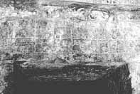
Page 84 Akab-Dzib. — In the city of Chichen Itza, there is a slab which
forms the lintel of the door of the inner chamber at the southern end of
the building called Akab-Dzib. Here we have "the awful, the tenebrous
record." This slab is a description of The Lands of the West being shaken
to their foundations by earthquakes and then engulfed.
[Akab Dzib means, in Maya, "The House of Mysterious Writing." It was the
home of the administrator of Chichén Itzá. The southern end of the
building has one entrance. The door opens into a small chamber and on the
opposite wall is another doorway, above which on the lintel are
intricately carved glyphs—the “mysterious” or “obscure” writing that gives
the building its name today. Under the lintel in the door jamb is another
carved panel of a seated figure surrounded by more glyphs.]
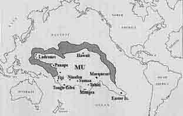
On some of the South Sea Islands, notably Easter, Mangaia, Tonga-tabu, Panape, and the Ladrone or Mariana Islands, there stands today vestiges of old stone temples and other lithic remains that take us back to the time of Mu.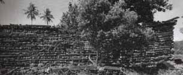
Page 93 - On Panape (Pohnpei) stands what I consider to be the most important ruin in the South Sea Islands. It consists of the ruins of a great temple, a structure 300 feet long by 60 feet wide, with walls standing (in 1874) 30 feet high, and at the ground 5 feet in thickness." On the walls are remains of carvings of many sacred symbols of the motherland. This temple is connected with canals and earthworks and has vaults passages and platforms. The whole is built of basaltic stone. Below the pavements of the great quadrangle, on opposite sides, are two passages or gateways, each about 10 feet square. These are pierced through the outer wall with passageways leading down to the canal.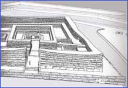
Within the great quadrangle is a central pyramidal chamber, without question, the holy of holies. The natives cannot be induced to go near the ruin, because they say it is haunted by ghosts and evil spirits, which they call mauli. Churchward posited that the site of Nan Modal, on
Pohnpei Island in Micronesia, was one of the seven cities of ancient Mu
/ Lemuria. The cyclopean ruins of Nan Modal, at one time a ceremonial
centre covering 11 square miles, consist of around 90 small artificial
islands built up out of a lagoon, and interlinked by a network of tidal
canals. These islands contain house foundations, sea walls, tunnels and
burial vaults, all constructed entirely from prismatic basalt columns
stacked crisscross like log cabins. These rocks weigh several tons on
average, with the largest weighing 25 tons.
According to wikipedia
the name Nan Madol means "spaces between" and is a reference to the
canals that criss-cross the ruins. Nan Madol was the ceremonial and
political seat of the Saudeleur dynasty until about AD 1500. Carbon
dating indicates that the construction of Nan Madol began around AD
1200, while excavations show that the area may have been occupied as
early as 200 BC. Some probable quarry sites around the island have been
identified, but the exact origin of the stones of Nan Madol is yet
undetermined. The stone would have been transported some distance to the
site, as no quarries have been found nearby. A clue to how this feat was
achieved are a trail of dropped stones between the island and the
quarries, which would suggest that the stones were transported by raft.
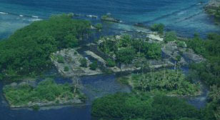
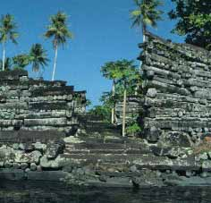
Madol Powe, the mortuary sector, contains 58 islets in the northeastern area of Nan Madol. Most islets were once occupied by the dwellings of priests. Some islets served special purpose, like food preparation on Usennamw, canoe construction on Dapahu, and coconut oil preparation on Peinering. High walls surrounding tombs are located on Peinkitel, Karian, and Lemenkou, but the crowning achievement is the royal mortuary islet of Nandauwas, where walls of 18 to 25 feet high surround a central tomb enclosure within the main courtyard.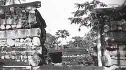
According to Pohnpeian legend, the Saudeleur Dynasty began with the arrival of the two brothers Olisihpa and Olosohpa, who voyaged into Pohnpei seeking a place to build an altar so that they could worship Nahnisohn Sahpw, the god of agriculture. The last Saudeleur was conquered by Isokelekel. According to the legend, Isokelekel was born of the Thunder god and a human female. He instituted the nahnmwarki title system that persists on Pohnpei to this day. Nan Madol had been abandoned by the time the first Europeans arrived, early in the 19th century.http://www.janeresture.com/micronesia_madol/
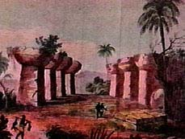
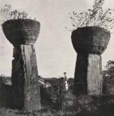
Page 96 - About 30 miles from Hilo (Hawaii) there is a great ruin on a
hill called Kukii. There are no stones on this hill except those which
have been carried there. "The summit was leveled and squared, and the
building laid out according to the cardinal points and the floor paved.
Two square blocks of stone in an upright position, about 15 or 16 feet
apart, range exactly east and west. "The upper part of the hill was
terraced, and the terraces had been faced with hewn stone. The stones were
perfect squares, the smallest three feet in diamenter., while others were
larger. Every stone was faced and polished on all sides, so that they
could perfectly fit together. There is still about 30 feet of facing left
on the lower terrace partly in position. On the western side there was a
stairway running from the base to the top of the hill, a height of nearly
300 ft. On the Kona side is another ruin. 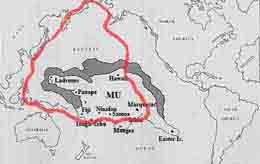
"To form an ice cap around the Northern parts of the Northern Hemisphere
down to the 40th Parallel, of a thickness of 20,000 feet, would require
more water than now exists in the Artic Ocean, North Atlantic and North
Pacific Oceans. Where did the water come from? and where has it gone to
since? The water which formed the Northern Ice Cap could not have come
from the the South, because the South Pole was imitating her northern
sister by dressing herself also up in an equally imposing ice cap. Between
the two, there was more water used in forming these two lumps of ice than
now exists on the face of the earth!"[Cosmic Forces of Mu]
"The earth has been subjected to two forms of cataclysms, arising from two
distinct causes. First, the volcanic cataclysm arising from volcanic
workings. These cataclysms affect local areas only. Second, the magnetic
cataclysm, caused by a lurch of the earth going back into magnetic
balance. A magnetic cataclysm results from the earth getting out of
magnetic balance. The earth is out of magnetic balance when her pole gets
drawn towards the sun more than 23 1/2 degrees from its mean position.
When the pole has been drawn more than 23 1/2 degrees from mean, the
earth's gyroscopical force carries it back at too great a velocity, which
causes a displacement of the earth's surface waters. During the early part
of the earth's history, magnetic cataclysms were of frequent occurence, as
shown by various rock formations. They continued down to the end of the
Tertiary Era, when the earth's crust had been so thickened and compacted
that the earth went into the final magnetic balance."
"The Bible relates that the waters of the 'Flood' rose 26 feet and covered
the mountains. In Psalms there is a reference 'before the mountains were
raised.' Many of the Central Asiatic tribes date their time from the
raising of the Himalayas and mountains of Central Asia. The Zulus claim
that they came to South Africa from the north, as their country in the
north was ruined by the raising of the mountains." [The Children Of Mu]
"Gas belts could not form until after the rock above was too thick to
raise and puncture. This occured about 12,500 to 13,000 years ago, so that
mountains are of camparatively recent origin."
"Nearly the entire continent of Mu fell into the Pacific Ocean around
10,000 B.C. After the sinking of the Motherland Mu, all civilizations
throughout the world either degenerated or came to a standstill, not only
Egypt, but all others, including India."
"The ancient civilization of Burma was reportedly wiped out about 12,000
years ago, during the forging of various gas belts, and the raising of
mountains."
"The various phenomena which are shown throughout the Valley of Mexico
today demonstrate without the possibility of controversy that the mountain
ranges in North America are not over 11,500 years old, if as much." [The
Children of Mu]
Page 131 - In the Capital Hill, Smyrna, Asia Minor, 500 feet above the
level of the sea, are to be seen the remains of three prehistoric
civilizations, one above the other, with a srtratum of sand, gravel and
covering each civilization. The civilizations are not lying horizontally,
but at an angle of 45 deg. Were it not for the fact that the civilizations
are at an angle, following the angle of the mountain, our scientists might
assert that they were built on top of the hill and had not been raised.
Their angle, however, proves beyond all controversy that they existed
before the mountains were raised. What are the ages of these
civilizations?
Page 131 - Twenty-nine miles north of Mexico City, Niven has discovered
three civilizations, buried one beneath the other, with strata of sand,
gravel and boulders between them. These cities are above 1000 ft above Sea
Level with mountains ranging from 5000-15000 ft altitude interveneing
between them and the sea. I have traced the boulders to a formation on the
west coast of Mexico, and the lowest mountain between the cities and the
source of the boulders is 5000 ft in height.
These cities must have been built before the the mountain were raised, as
is shown by tablets coming from them.
When Tiahuanaco was built it was just above sea level. Now it is 15,000 ft
above sea level.
Niven’s buried cities have a layer of ash that covers the city. The city
is on a plain surrounded by mountains many miles distant 7,400 ft above
sea level.
30 ft below ground geological
It is known that deposits of boulders, gravel and sand are the works of
tidal waves from the ocean. No tidal waves could pass over the mountains
to 7,000 ft above sea level.
The deposits prove that at the time these were made the land was only a
few feet above sea level.
During that time these cities were in existence there were no mountain
ranges between Mexico City and the oceans and the plateau of Mexico City
had not been raised to 7,400 ft above sea level.
Mountain ranges were formed by gas belts. At the
end of the Pliocene [1.6 million years ago], the earth went into final
magnetic balance. Up to the beginning of the Pleistocene no mountains
existed. Cities antedate the Pleistocene and are of the Tertiary era.
According to geological calculation 200,000 years old. He gives 50,000.
The boulders originated on the pacific coast of Mexico.
Up to the time of Mu's submersion all symbols retained their original
meanings. From the time of Mu's destruction I must pass over about 5,000
or 6,000 years. Those were years when seemingly no history was written
except a few scraps in India and Egypt.
During this time mankind apparently was reviving and repeopling the earth,
after its almost total destruction by the submersion of Mu and other lands
and the subsequent formation of gas belts and mountains.
In ‘The Volcanoes of the Pacific’ [1898] Coleman Phillips says:
The Langiis in Tongatabu must have been built cœval with the ruins we find
at Stonehenge, Brittany, Central America, and other places. Mr A. W.
Mackay kindly gave me two photographs of the trinolith there, which I lay
before the meeting. I have always considered the stone images of Easter
Island and the trinolith at Tonga came from almost the one and the same
people, existing at the time of the pyramid-building age, four to five
thousand years ago—a gentle, unwarlike, artistic race. “Viti” or “fiji” in
Japanese means “a chain of hills”; Mount Fuji is its sacred mountain, I
think. The ruins at Ponape and Espiritu Santo, in the New Hebrides—and I
think some will be found also in New Caledonia—may have dated from the
same time, or they may be of a later construction.
We find ruins at Tonga, Espiritu Santo (New Hebrides), Ponape, the
Carolines, I think New Caledonia, Easter Island, and I am not certain
whether there are not traces of the mound-builders to be met with in the
Sandwich Group and Tahiti. It may have been that the Aztecs and Toltecs of
Central America and the highly civilised ancient Peruvians sent out their
colonising galleys westward into the Pacific four or five thousand year
ago, and it is the ruins left by these colonies we find to-day.
Neither the ruins at Ponape nor the Langiis at Tongatabu show much
alteration in land-levels, so that those that support the theory of a
great sunken continent in the Pacific will have to account for this
absence of alteration during the past four to five thousand years.
The whole of the central and eastern islands of the Pacific appear to me
to be purely volcanic, for even what we name the “coral islands” are built
up by the coral polyp from a volcanic base. What we call “atolls” are only
the tops of extinct craters or volcanic hills, subsiding from the result
of previous volcanic action.
“The Algonkin Indians have a tradition as told by John Ballou in his
Oahspe, about the flood, and the submersion of Mu – called Pan. As related
in this book, the tradition is actually two traditions in one.
138 ships, the vortex of the earth
closed from the extreme, and lo, the earth was broken … rise no
more”
Also:
"Most Guataman inscriptions commemorate the
motherland of man and its destruction."
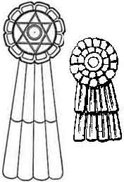
On Page 172 Chapter IX Symbols Vignettes, Tableaux and Diagrams
Churchward says:
"The Cosmogonic Diagram of the land of Mu was the first book written by
man.
I have traced this diagram back to more than 35,000 years ago."
Somewhere else in the book he says:
“Cosmic diagram of the land of Mu, copied by the Mayas of the Yucatan,
Nagas (Mayas) of India, Babylonians, Assyrians, Egyptians and pueblo
Indians of North America. The Mayas retained its simplicity."
The symbol he refers to is shown left. Compare it to the one in the
bottom Left hand corner of the diagram below.
It is one of Oahspe's sacred symbols.
The symbol is used by the great grandson of Churchward in his My-Mu.com
website.
It is shown in his youtube video 'Ancient Relics of Mu', in which he
admits that Churchward's vases seem to be fraudulent.
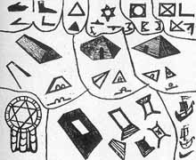
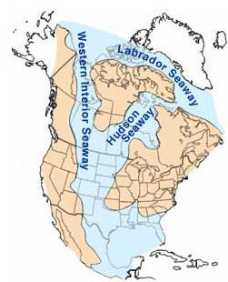
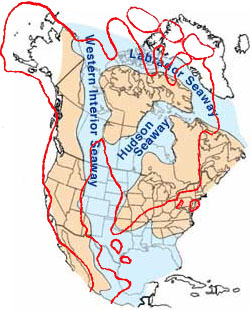
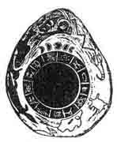
The stone [shown right] is 16 inches long and 13 inches across at its
widest part. "It is a sandstone boulder such as found in shale near Hot
Springs. In the center is a slightly raised ring 7¼ inches in diameter
divided into thirteen equal divisions. On each division is inscribed a
figure. Superimposed on this circle is another which is much higher. This,
I presume to be meant for a picture of the Sun. Above this main figure is
engraved a caption, the Moon in its various phases during a calendar
month.
This tells us the meaning of what is below, namely: the circle with the
thirteen divisions represents thirteen calendar months, making one year.
The thirteen months, forming a circle, tell us that the year is completed,
the beginning and the end. Over the caption is shown the All Seeing Eye
looking down from heaven above. This is an ancient symbol dating back to
the earliest writings, and universally found. Outside of the calendar
proper, to the edge of the stone, various animals are shown, including
Man.
[In England near Stonehenge is a Serpent Mound said to be an exact duplication of the American Serpent Mound at Peebles, Ohio.]
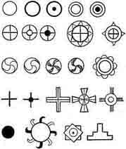
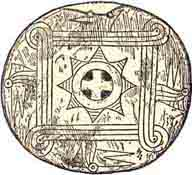
Churchward seems to ignore a lot of Oahspe's revelation. For example,
when discussing the Exodus he gives a different explanation.
"When they arrived at the Sea of Reeds a submarine earthquake occurred in
the Mediterranean Sea off the mouth of the Nile which drew off the water,
leaving the Sea of Reeds dry--the Israelites passed over, the Egyptian
army followed. During its passage the returning cataclysmic wave rolled in
over the Sea of Reeds overwhelming the Egyptians. A mistranslation
evidently occurs in the Bible. The Sea of Reeds was mistaken for the Red
Sea. The Red Sea at the point where it is stated the Israelites crossed
lies 200 miles from Goshen."
Churchward is influenced by the Vedas, quoting:
AUM, the nameless, is figured as a trinity by the equilateral triangle.
Book of Manu, Sloka 77. "The monosyllable A U M means earth, sky and
heaven."
Manava dharma Sastra . Book 2. Sloka 74. "In the beginning the Infinite
only existed called Aditi.
In this Infinite dwelt A U M
Only the supreme spirit, the seven headed serpent, moved within the
abyss of darkness. Originally the universe was only a soul. Everything was
without life, calm, silent, soundless void, and darkness was the immensity
of space. Desire came and He created worlds …
Book 1, sloka 10 : "The visible universe in the beginning was only
darkness."
Book 1, sloka 9 : "He first produced the waters and in them deposited an
egg."
Book 1 , Sloka 8 : "This germ became an egg"
Rig Veda, sec. 3, 1. 2, v. 4, pp.- (2000-2500 BC) : "In this egg was
reproduced the intellect of the Supreme Being under the form of Buddha,
through whose union with the goddess Maya, the good mother of all gods and
man. (This corresponds with Adam and Eve 1700 years later) Other than him
nothing existed; darkness there was."
Yucatan—Nahuatl: "The particles of atmosphere on being hit by the divine arrows became animated. Heat, which determines the movement of matter, was developed in it."
[compare this to the Oahspe line below from the Book of Cosmogony and Prophecy Ch1:34-5:]
As the lines of vortexya are in currents from the outer toward the interior, so do the solutions of corpor take the shape of needles, in the master, pointing toward the center, which condition of things is called LIGHT; and when these needles approach the center, or even the photosphere, the actinic force thereof is called HEAT.
Aitareya-A'ram-'ya, slokas 4 to 8 : "Originally this universe was only a
soul, nothing active or inactive existed. The thought came to Him, 'I wish
to create worlds, 'and so he created the worlds, the light, the mortal
beings, the atmosphere that contains the light,
the earth that is perishable, and the lower depths, that of the waters."
Page 4: He who measures out the light in the air"
In 'The
Golden Embryo Hymn' (Rig Veda Book 10 Hymn 121) it says:
5) By him the heavens are strong and the earth is steadfast, by him
light's realm and sky-vault are supported. By him the regions
in mid air were measured. What God shall we adore with
our oblation?
Giles B Stebbins (of the 1880's Freethinkers Association, who included
Materialists, Spiritualists, Free Religionists, and all who endorsed the
Nine Demands of Liberalism), in 'Chapters from the Bible of the Ages'
says:
" ... whom the highest heaven was established — He who measures
out the light in the air. Who is the God to whom we shall
offer our sacrifice?
In 'Queen Moo and the Egyptian Sphinx' by Augustus Le Plongeon on Page
94 he says:
"According to Nahuatl cosmogony, when Omeyocax, the Creator, who dwelt in
himself, thought that the time had come when all things should be created,
he arose, and from one of his hands, resplendent with light, he darted four arrows, which struck and put in
motion four molecules, origin of the
four elements that floated in space. These molecules, on being hit by the
divine arrows, became animated. Heat, which determined movement in matter,
was developed in them. Then appeared the first
rays of the rising sun, which brough life and joy
throughout nature."
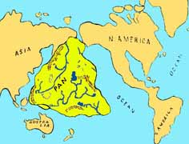
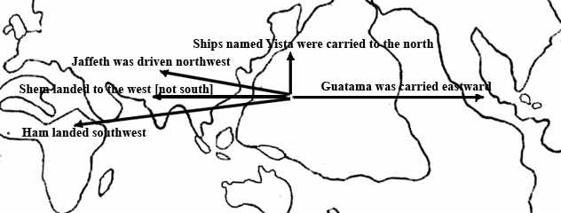
58. The fleet named Jaffeth was driven to the westward and north, and the country was called Jaffeth for thousands of years thereafter, and is the same as is called Chine'ya to this day. Chapter II
8. And when my work was in readiness I raised up my hand, as a surgeon
that would lop off a diseased limb, and I cleft asunder the continent of
Pan and sunk it beneath the waters.
10. I said unto the guardian angels: In the lands whither I will take my
people, let them build mounds and
walled cities, with ladders to enter, after
the manner of the ancients. In all
the divisions of the earth, alike and like shall they
build.
11. For in the time of kosmon their relics shall be testimony that the
I'hin forerun the I'huan, the copper-colored, race in all the world.
12. So also will I, the Lord, provide in the kosmon
era to discover the sunken land
of Whaga (Pan), that
mortals may comprehend the magnitude of the work of the Lord.
13. In those days the I'hins dwelt not alone, but in cities and
villages; and they were clothed. And they tilled the ground and brought
forth grains and seeds good to eat; and flax and hemp, from which to
make cloth for covering the body. And their food was of every herb and
root, and grain and seed, and fruit that cometh of the earth; but they ate not flesh nor fish, nor of anything that
breathed the breath of life.
19. In three thousand years thereafter, behold, there were thousands of
cities and hundred of thousands of inhabitants who had spread abroad
over the lands of the earth.
20. And they had built ships and sailed abroad
on the seas, and inhabited the islands thereof, north and south and east
and west.
Book of Aph Ch. III, being the heavenly records of Aph as pertaining to the submersion of the continent of Whaga ( afterward called Pan )
14. And let thy [Aph's] consorts extend in a line from thy place
down to the earth, for this shall be the delivery of them whom I shall
cut off.
16. Quickly, now, the ships of fire formed in line, extending from my
[Aph's] place down to hada, where rested Neph and his Lords of the
earth, whose hosts extended to all the divisions of land and water.
17. And in the line of the etherean ships were stationed the plateaux of
rank; and the hosts of Gods and Goddesses took their places according to
the rank of wisdom, power and love manifested in the etherean
departments whence they came, with the two Orian Chiefs at either
extremity.
18. And I divided the line into sections, each with two hundred and
fifty ships, and there were one thousand sections. And every ship was contracted ten thousand fold, which was
the force required to break the crust of the
earth and sink a continent.
Chapter VI
1. And now Aph, Son of Jehovih, said: When the etherean hosts were
arranged in due order, I called out to Thee, O Jehovih, saying: In Thy
Strength and Wisdom, O Father, join Thou the heavens above and the earth
below!
2. And the end of the etherean column that extended
to Chinvat, on the border of
the vortex of the earth, was made
fast by the pressure of Thy wide heavens.
3. Again I said: In Thy Strength and Wisdom, O Jehovih, join Thou the
heavens above with the earth below! 4. And the end of the etherean
column that extended down to the earth was made
fast around the borders of Whaga, by the sea
and the high mountains on the north.
5. Again I said: O Jehovih, deliver Thou the earth from evil, for Thy
glory, forever!
6. And the vortex of the
earth closed in from the extreme, and lo, the earth was
broken! A mighty continent was cut loose from its fastenings, and the
fires of the earth came forth in flames and clouds with loud roaring.
And the land rocked to and fro like a ship at sea.
7. Again I said: O Jehovih, deliver Thou Thy heavens, which are bound as
with a chain, to a rotten carcass.
8. And again the vortex of the earth closed in
about on all sides, and by the pressure,
the land sank down beneath the water, to rise no more.
Chapter VII
4. And when I came to the ships in which the I'hins were escaped, Thy
voice, O Jehovih, came to me, saying: Bend thou the currents of the
winds of heaven, O My Son; and shape the ships that they shall fall into
groups; and thou shalt divide the groups, making four groups in all. And
thou shalt drive the groups of ships before the winds of heaven, and
bring them into the four different lands
of the earth, according to its previous history and adaptation.
5. For in all countries shall My chosen begin the laying down of the
foundation of My everlasting kingdom, and they shall never more be
destroyed by the people of darkness, neither of earth or heaven.
7. I said: By Thy light, Jehovih, I desire two ships to go to the north land, which was not sunken, for they shall be a testimony in time to come.
Chapter VIII
1.Thou hast stretched a line beyond the moon, and by thy spoken word
crushed in the side of the great earth, as if it were nothing.
Putting a picture together from Oahspe Information
The 'Synopsis Of Sixteen Cycles' passages quoted above tell of great
cities, rich valleys, temples and the great capital of Penj. Indeed Pan
was a great empire, as was Plato's Atlantis.
The 'Lords’ First Book' says the continent of Pan was surrounded on all
sides by etherean ships of fire that 'cut loose the foundations of the
earth' at the borders of the ocean and the mountains of Gan.
Zha'Pan (Zha'pahn), or Japan (a name signifying relic of Pan) lay to the
north, where the land was cleaved in twain.
The heavenly records of Aph reveal that the etherean ships formed a line
from beyond the moon, on the border of the vortex of the earth, down to
the borders of the land mass of Pan. The line was comprised of:
1,000 sections
250 ships each section
every ship was contracted 10,000 fold - the force required to break the crust of the earth and sink a continent
1,000 × 250 = 250,000 ships
Given that the average distance between Chinvat and the earth's surface
is about 250,000 miles, that would make the size of a ship one mile high
when compressed 10,000 fold, or 10,000 miles high when normal.
The line was a column, of diameter comparable to the borders of Pan, made
fast at each end by the pressure of the heavens (at Chinvat above), and
the continent (at the earth below).
It would seem that as the 250,000 contracted ships decompressed (acting
like a line of hydraulic jacks), the pressure between the outer extreme of
the earth's vortex and the continent caused the vortex of the earth to
close in from the extreme. The pressure of the 'wide heavens' (presumably
etheria) gave an unseen anchor point somehow, and possibly even supplied
'pneumatic' pressure for the ships to decompress against the resistence of
the land.
The pressure at the base of the column would have been applied from the
continents center out to the borders of the ocean, except at the 'high
mountains on the north' where the land was to be cleaved in twain.
"There are no archaeological [fossil] finds that can be placed in the period between 20,000 and 25,000 BC., although we have finds from before and after those dates... It seems feasible that an event that modified the concentration of carbon 14 in the atmosphere took place in those days." Page 65 "The Eternal Man" by Pauwels and Bergier.
The Legend of the Deluge according to Berosus
"After the death of Ardates, his son Xisuthrus reigned. In his time
happened a great Deluge. The Deity, Cronus, appeared to him in a vision,
and warned him that upon the 15th day of the month Daesius there would be
a flood, by which mankind would be destroyed. He therefore enjoined him to
write a history of the beginning, procedure and conclusion of all things;
and to bury it in the city of the Sun at Sippara; and to build a vessel,
and take with him into it his friends and relations; and to convey on
board everything necessary to sustain life, together with all the
different animals, both birds and quadrupeds, and trust himself fearlessly
to the deep. Having asked the Deity, whither he was to sail? he was
answered, 'To the Gods ': upon which he offered up a prayer for the good
of mankind.
He then obeyed the divine admonition; and built a vessel 5 stadia in
length, and 2 in breadth. Into this he put everything which he had
prepared; and last of all conveyed into it his wife, his children, and his
friends. After the flood had been upon the earth, and was in time abated,
Xisuthrus sent out birds from the vessel; which, not finding any food nor
any place whereupon they might rest their feet, returned to him again.
After an interval of some days, he sent them forth a second time; and they
now returned with their feet tinged with mud. He made a trial a third time
with these birds; but they returned to him no more: from whence he judged
that the surface of the earth had appeared above the waters. He therefore
made an opening in the vessel, and upon looking out found that it was
stranded upon the side of some mountain; upon which he immediately quitted
it with his wife, his daughter, and the pilot. Xisuthrus then paid his
adoration to the earth, and, having constructed an altar, offered
sacrifices to the gods, and, with those who had come out of the vessel
with him, disappeared.
They, who remained within, finding that their companions did not return,
quitted the vessel with many lamentations, and called continually on the
name of Xisuthrus. Him they saw no more; but they could distinguish his
voice in the air, and could hear him admonish them to pay due regard to
religion; and likewise informed them that it was upon account of his piety
that be was translated to live with the gods; that his wife and daughter,
and the pilot, had obtained the same honour. To this he added that they
should return to Babylonia; and, it was ordained, search for the writings
at Sippara, which they were to make known to mankind: moreover that the
place, wherein they then were, was the land of Armenia. The rest having
heard these words, offered sacrifices to the gods; and taking a circuit
journeyed towards Babylonia."
The Babylonian Legend of the Deluge as told to Gilgamish by
Uta-Napishtim
The Legend of the Deluge has no original
connection with the Epic of Gilgamish, but was introduced
into it by the editors of the Epic, perhaps during the reign of
Ashur-bani-pal (669-626 BC). Gilgamish, who was horrified when his
companion Enkidu died, meditated deeply how he could escape death himself.
He knew that his ancestor Uta-Napishtim a had become immortal, therefore
he determined to set out for the place where Uta-Napishtim lived so that
he might obtain from him the secret of immortality. Guided by a dream,
Gilgamish set out for the Mountain of the Sunset, and, after great toil
and many difficulties, came to the shore of a vast sea. Here he met
Ur-Shanabi, the boatman of Uta-Napishtim, who was persuaded to carry him
in his boat over the "waters of death", and at length he landed on the
shore of the country of Uta-Napishtim. The immortal came down to the shore
and asked the newcomer the object of his visit, and Gilgamish told him of
the death of his great friend Enkidu, and of his desire to escape from
death and to find immortality.
1. Gilgamish said unto Uta-Napishtim ...
7. How hast thou stood the company of the gods and sought life?"
8. Uta-Napishtim said unto Gilgamish:
9. "I will reveal unto thee, O Gilgamish, a hidden mystery, And a secret matter of the gods I will declare unto thee.
11. Shurippak, a city which thou thyself knowest, On the river Puratti (Euphrates) is situated,
13. That city is old; and the gods [dwelling] within it. Their hearts induced the great gods to make a windstorm
15. There was their father Anu, their counsellor, the warrior Enlil,
17. Their messenger En-urta and their prince Ennugi.
19. Nin-igi-ku, Ea, was with them [in council] and reported their word to a house of reeds."[First speech of Ea to Uta-Napishtim who is sleepingiin a reed hut.]
22. O House of reeds, hear! O Wall, understand!
23. O man of Shurippak, son of Ubar-Tutu, throw down the house, build a ship,
25. Forsake wealth, seek after life, hate possessions, save thy life,
27. Bring all seed of life into the ship.
28. The ship which thou shalt build, the dimensions thereof shall be measured,
30. The breadth and the length thereof shall be the same.
31. Then launch it upon the ocean.32. I understood and I said unto Ea, my lord:
33. See, my lord, that which thou hast ordered, I regard with reverence, and will perform it,
35. But what shall I say to the town, to the multitude, and to the elders?
36. Ea opened his mouth and spake and said unto his servant, myself,
38. Thus, man, shalt thou say unto them:
39. Ill-will hath the god Enlil formed against me, therefore I can no longer dwell in your city,
41. And never more will I turn my countenance upon-the soil of Enlil.
42. I will descend into the ocean to dwell with my lord Ea.
43. But upon you he will rain riches, a catch of birds, a catch of fish48. As soon as [something of dawn] broke . . . 55. The child . . . brought bitumen, the strong . . . brought what was needed.
57. On the fifth day I laid down its shape.
58. According to the plan its walls were 10 gar, (i.e. 120 cubits) high,
59. And the width of its deck (?) was equally 10 gar.
60. I laid down the shape of its forepart and marked it out (?).
61. I covered (?) it six times . . . . I divided into seven,
63. Its interior I divided into nine,
64. Caulking I drove into the middle of it.
65. I provided a steering pole, and cast in all that was needful.
66. Six sar of bitumen I poured over the hull (?),
67. Three sar of pitch I poured into the inside.
68. The men who bear loads brought three sar of oil,
69. Besides a sar of oil which the tackling (?) consumed,
70. And two sar of oil which the boatman hid.
75. I celebrated a feast as if it had been New Year's Day.
77. Before the sunset (?) the ship was finished.81. With everything that I possessed I loaded it (i.e., the ship).
84. With all that I possessed of all the seed of life I loaded it.
85. I made to go up into the ship all my family and kinsfolk,
86. The cattle of the field, the beasts of the field, all handicraftsmen I made them go up into it.
87. The god Shamash had appointed me a time (saying)
88. The sender of . . . . . will at eventide make a hail to fall;
89. Then enter into the ship and shut thy door.
90. The appointed time drew nigh;
91. The sender of . . . . . made a hail to fall at eventide.
92. I watched the aspect of the [approaching] storm,
93. Terror possessed me to look upon it,
94. I went into the ship and shut my door.
95. To the pilot of the ship, Puzur-Enlil the sailor
96. I committed the great house (i.e., ship), together with the contents thereof.97. As soon as something of dawn shone in the sky
98. A black cloud from the foundation of heaven came up.
99. Inside it the god Adad thundered,
100. The gods Nabû and Sharru (i.e., Marduk) went before,
101. Marching as messengers over high land and plain,
102. Irragal (Nergal) tore out the post of the ship,
103. En-urta went on, he made the storm to descend.
104. The Anunnaki [The star-gods of the southern sky] brandished their torches,
105. With their glare they lighted up the land.
106. The whirlwind (or, cyclone) of Adad swept up to heaven.
107. Every gleam of light was turned into darkness.
108. . . . . . the land . . . . . as if had laid it waste.
109. A whole day long [the flood descended] . . .110. Swiftly it mounted up . . . . . [the water] reached to the mountains
111. [The water] attacked the people like a battle.
112. Brother saw not brother. Men could not be known (or, recognized) in heaven.
114. The gods were terrified at the cyclone.
115. They shrank back and went up into the heaven of Anu.
116. The gods crouched like a dog and cowered by the wall.
117. The goddess Ishtar cried out like a woman in travail.
118. The Lady of the Gods lamented with a sweet voice [saying]:
119. May that former day be turned into mud,
120. Because I commanded evil among the company of the gods.
121. How could I command evil among the company of the gods,
122. Command battle for the destruction of my people?
123. Did I of myself bring forth my people that they might fill the sea like little fishes?
125. The gods, the Anunnaki wailed with her.
126. The gods bowed themselves, and sat down weeping.
127. Their lips were shut tight (in distress) . . .128. For six days and nights the wind, the storm raged, and the cyclone overwhelmed the land.
130. When the seventh day came the cyclone ceased, the storm which had fought like an army.
132. The sea became quiet, the grievous wind went down, the cyclone ceased.
133. I looked on the day and voices were stilled,
134. And all mankind were turned into mud,
135. The land had been laid flat like a terrace.
136. I opened the air-hole and the light fell upon my cheek,
137. I bowed myself, I sat down, I cried,
138. My tears poured down over my cheeks.
139. I looked over the quarters of the world, (to] the limits of ocean.
140. At twelve points islands appeared.141. The ship grounded on the mountain of Nisir.
142. The mountain of Nisir held the ship, it let it not move.
146. When the seventh day had come I brought out a dove and let her go free.
148. The dove flew away and [then] came back;
149. Because she had no place to alight on she came back.
150. I brought out a swallow and let her go free.
151. The swallow flew away and [then] came back;
152. Because she had no place to alight on she came back.
153. 1 brought out a raven and let her go free.
154. The raven flew away, she saw the sinking waters.
155. She ate, she waded (?), she rose (?), she came not back.
156. Then I brought out [everything] to the four winds and made a sacrifice;
157. I set out an offering on the peak of the mountain.
158. Seven by seven I set out the vessels,
159. Under them I piled reeds, cedarwood and myrtle (?).161. The gods smelt the sweet savour and gathered together like flies over him that sacrificed.
163 Now when the Lady of the Gods [Ishtar] came nigh,
164. She lifted up the priceless jewels which Anu had made according to her desire, [saying]
165. O ye gods here present, as I shall never forget the sapphire jewels of my neck
166. So shall I ever think about these days, and shall forget them nevermore!
167. Let the gods come to the offering,
168. But let not Enlil come to the offering,
169. Because he took not thought and made the cyclone,
170. And delivered my people over to destruction."171. Now when Enlil came nigh he saw the ship; then was Enlil wroth
173. And he was filled with anger against the gods, the Igigi [The star-gods of the northern heaven] saying:
174. Hath any being escaped with his life?
175. He shall not remain alive, a man among the destruction.
176. Then En-urta said unto the warrior Enlil:
178. Who besides the god Ea can make a plan?
179. The god Ea knoweth everything that is done.18o. The god Ea said unto the warrior Enlil,
182. O Prince among the gods, thou warrior,
183. How, how couldst thou, not taking thought, make a cyclone?
184. He who is sinful, on him lay his sin, he who transgresseth, on him lay his transgression.
186. But be merciful that [everything] be not destroyed be long-suffering that [man be not blotted out].
187. Instead of thy making a cyclone, would that a famine had arisen and [laid waste] the land.
195. As for me I have not revealed the secret of the great gods.
196. I made Atra-hasis to see a vision, and thus he heard the secret of the gods.
197. Now therefore take counsel concerning him.198. Then the god Enlil went up into the ship,
199. He seized me by the hand and brought me forth.
200. He brought forth my wife and made her to kneel by my side.
201. He touched our brows, he stood between us, he blessed us [saving],
202. Formerly Uta-Napishtim was a man merely,
203. But now let Uta-Napishtim and his wife be like unto us gods.
204. Uta-Napishtim shall dwell afar off, at the mouth of the rivers.
205. And they took me away to a place afar off, and made me to dwell at the mouth of the rivers.
Signs in Today's Culture
Today a deep urge within the modern generation has developed an
identification with tribal cultures, and an interest in the sign of the
rainbow. This has now become a world wide movement, which will some day
need to discover its soul. This movement is happening along side the 'new
age' movement, whose reprocessing of ancient knowledge and prophecy is
adding momentum to a visible new era of Kosmon, and anticipating the fast
approaching time of Jehovih's 'glory on the earth'.
These, and popular book writers, anthropologists and archaeologists are
unravelling the 'preserved' names and symbols of rites and ceremonies,
land and water, and the stars etc., for clues to Man's origin.
Intellectual circles are unraveling the ancient mystery of the precession
of the equinoxes, one cycle of which happens to be the passage of time
since the great flood.
"The rim of the Pacific basin is marked by a succession of trenches that cut into its floor like deep gashes.... By the 1950s the trenches (and the strangely weak gravity above them) had emerged as one of the most remarkable features of the earth's surface. ... some of them extending farther below sea level than Everest rises above it by a margin of a kilometer or more.... materials recovered "resemble... deposits laid down in shallow water." What implacable forces could have caused such large- scale distortions of the sea floor? Why are they so narrow so long and so deep?... What is the significance of the fact that they lie along the Pacific ring of fire?... The most prominent ones are all about the same depth- ten kilometers (six miles) below sea level- suggesting they were all products of a similar, uniform process. If the floor of the Pacific was old compared to that of the Atlantic... why is the average thickness of Atlantic sediment twice that of Pacific sediments? If trenches mark where sea floor, moving away from a central ridge, descends beneath the continents, where are the trenches on either side of the Atlantic? If the trenches on the rim of the northwest Pacific are swallowing sea floor manufactured along a midocean ridge, ... where is that ridge?" Pages 58- 60 & 109 "Continents in Motion" by Walter Sullivan.
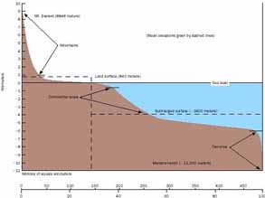
The continental rise ends at the abyssal plain (deepest, most level part of the ocean), at a depth of about 4 km. The abyssal plain is dotted with thousands of small, extinct volcanoes called abyssal hills. The abyssal plains of the Atlantic appear smooth because its abyssal hills are buried under a thick blanket of continental sediment, but in the Pacific Ocean basin (ringed by trenches that are said to trap sediments before they can spread over the ocean floor) tens of thousands of unburied abyssal hills have been observed. Abyssal hills more than 1 kilometer (0.6 mile) high are called seamounts, and seamounts with flat tops are called guyots or tablemounts. Guyots are drowned volcanic islands that are said to become submerged due to subsidence of the oceanic lithosphere (the crust plus the strong portion of the upper mantle).
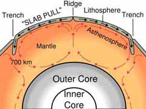
"Ocean- basin studies show that island-arc trench fills, where "subduction" supposedly takes place, are undeformed. The volumes of undeformed sedimentary rocks in layer 1 indicate (1) that sea- floor spreading has not taken place since Mesozoic [251-65.5 million years ago, the age of the dinosaurs and rifting of the supercontinent Pangaea into nearly the present continent forms] or earlier time; or (2) that subduction must take place seaward from the island- arc trenches; or (3) that there is no such process as "subduction." Page 461 "Unknown Earth" by William Corliss quoting A. A. Meyerhoff in "American Association of Petroleum Geologists, Bulletin 1972".
Subduction results from the difference in density between lithosphere
and underlying asthenosphere. Where, very rarely, lithosphere is denser
than asthenospheric mantle, it can easily sink back into the mantle at a
subduction zone; however, subduction is resisted where lithosphere is less
dense than underlying asthenosphere. Whether or not lithosphere is denser
than underlying asthenosphere depends on the nature of the associated
crust. Crust is always less dense than asthenosphere or lithospheric
mantle, but because continental crust is always thicker and less dense
than oceanic crust, continental lithosphere is always less dense than
oceanic lithosphere. Oceanic lithosphere is generally not denser than
asthenosphere but continental lithosphere is lighter. Exceptionally, the
presence of the large areas of flood basalt that are called large igneous
provinces (LIPs), which result in extreme thickening of the oceanic crust,
can cause some sections of older oceanic lithosphere to be too buoyant to
subduct. Where lithosphere on the downgoing plate is too buoyant to
subduct, a collision occurs.
Trenches are related to but distinguished from continental collision zones
(like that between India and Asia to form the Himalaya), where continental
crust enters the subduction zone. When buoyant continental crust enters a
trench, subduction eventually stops and the convergent plate margin
becomes a collision zone.
Most subduction zones are arcuate, where the concave side is directed
towards the continent. This is especially so where a back-arc basin
develops between the subduction zone and the continent. Volcanoes that
occur above subduction zones, such as Mount St. Helens and Mount Fuji,
often occur in arcuate chains, hence the term volcanic arc. Not all
"volcanic arcs" are arced: trenches and arcs are often linear.
The magmatism associated with the volcanic arc occurs 100-300 km away from
the trench. However, a relationship has been found, which relates volcanic
arc location to depth of the subducted crust as defined by the
Wadati-Benioff zone. Studies of many volcanic arcs around the world have
revealed that volcanic arcs tend to form at a location where the subducted
slab has reached a depth of about 100 km. This has interesting
implications for the mechanism that causes the magmatism at these arcs.
Arcs produce about 25% of the total volume of magma produced each year on
Earth (~30-35 km³), much less than the volume produced at mid-ocean
ridges.
Subduction zones are associated with the deepest earthquakes on the
planet. Earthquakes are generally restricted to the shallow, brittle parts
of the crust, generally at depths of less than 20 km. However, in
subduction zones, earthquakes occur at depths as great as 700 km. These
earthquakes define inclined zones of seismicity known as Wadati-Benioff
zones, which outline the descending lithosphere. Seismic tomography has
helped outline subducted lithosphere in regions where there are no
earthquakes. Some subducted slabs seem not to be able to penetrate the
major discontinuity in the mantle that lies at a depth of about 670 km,
whereas other subducted oceanic plates can penetrate all the way to the
core-mantle boundary. The great seismic discontinuities in the mantle - at
410 and 670 km depth - are disrupted by the descent of cold slabs in deep
subduction zones.
There are about 50,000 km of convergent plate margins, mostly around the
Pacific Ocean, but they are also in the eastern Indian Ocean, with
relatively short convergent margin segments in the Atlantic Ocean and in
the Mediterranean Sea. Trenches are sometimes buried.
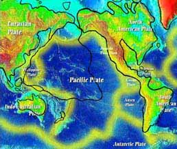
The Pacific Plate is an oceanic plate beneath the Pacific Ocean.Native Americans developed myths and legends concerning the Cascade volcanoes. According to some of these tales, Mounts Baker, Jefferson, Shasta were used as refuge from a great flood.
"The volcanic rocks of Easter Island, rising from the East Pacific Rise, were suspiciously continental also. The quakes in the Gulf of Alaska were also in a "continental area." "The Ocean of Truth" by H. W. Menard.
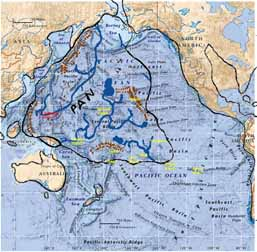
The oceanic crust displays a pattern of parallel magnetic lines, parallel to the ocean ridges, frozen in the basalt. In the 1950’s, scientists mapped the magnetic field generated by rocks on the ocean floor. They noticed a symmetrical pattern of positive and negative magnetic lines as they moved along the ocean floor, and the line of symmetry was at the mid ocean ridge. The fact that the anomalies were symmetrical at the mid-ocean ridge was explained by the hypothesis that new rock was being formed by magma at the mid-ocean ridges, and the ocean floor was spreading out from this point. When the magma cooled to form rock, it aligned itself with the current position of the north magnetic pole of the Earth (which has reversed many times in its past) at the time of its cooling. New magma forced the older cooled magma away from the ridge. Approximately half of the new rock was formed on one side of the ridge and half on the other.
Distribution of deep sea sediments in the area of the Pacific Ocean from the equator northward, unlike the rest of the worlds oceans, does not contain calcareous mud, from the shells of crustaceans settled to the bottom over long ages. Page 32 & 37 "Oceanography" by M. Grant Gross.
"About 80 percent of all the islands in the world lie within a
triangle whose apexes are Tokyo, Jakarta and Pitcairn." Page 21 "Lost
Paradise" by Ian Cameron.
[hundreds more have since been mapped] ... drowned islands of the
Pacific basin... from 3000 to 4000 meters... rarely closer than 1000
meters to the waters surface.
He named the flat topped ones "guyots"... in 1956 it was found that
sediments retrieved from the tops of some mid-Pacific guyots contained
fossils of shallow- water species dating from the relatively recent
Cretaceous Period,... What, Hess wondered, could possibly have submerged
these mountains to such great depths in so short a time? It was also
discovered that some of the sea mounts are tilted on the edges of
oceanic trenches... though having been formed upright." Page 61,62
"Continents in Motion, the New Earth Debate" by H. W. Menard.
"Recent geophysical and geological investigations of the floor of the deep Pacific indicate that this area has been the scene of large- scale geologic activity during relatively late stages of earth history... Mesozoic or Early Tertiary... the apparently slight thickness of deep- sea sediment suggests that relatively rapid deposition did not begin until the Mesozoic." Page 717 "Unknown Earth" by William Corliss quoting Roger Revelle in "Geological Society of America, Bulletin 1951.
"The great extent of a sub- bottom echo at depths of 0 to 40 meters below bottom in the tropical Eastern Pacific has been demonstrated... The first sub-bottom echo is well correlated by cores throughout the area with a white ash layer. Since the layer is fairly near the surface and is not discolored and contains nothing but the glassy ash material, it must have been laid down fairly quickly... The great extent of the ash and its shallow cover would imply a great amount of recent activity for a short time. Page 283 "Unknown Earth" by William Corliss quoting J. Worzel in "National Academy of Sciences, Proceedings 1959"
"The flat- topped guyots, high level terraces, and submarine canyons may have been cut by oceans miles lower and/or thousands of feet higher than those that roll against today's shores." Page 285 "Unknown Earth" by William Corliss.
When the flat- topped mesas, of Monument Valley, Arizona for example, are observed above water it is fairly obvious that their flat tops are all of similar height and most likely represent a former surface of the land before aeons eroded it away, first to become islands and until eventually the receding the water level left them standing completely exposed.
The expanding earth theorists have a useful youtube movie for locating the sunken continent, and the manner of its submerging. Click on this link:
Though it claims to have established a perfect fit in the Pacific,
leaving no place for Pan, there are a few questions involved.
The Pangaea theory has continents moving, even rotating to an extent, on
tectonic plates which then fit into their places, on a constant sized
planet.
The expanding earth theorists claim that the continents fit together
perfectly on a much smaller planet. According to them the land masses sit
there and dont move. Their is only ocean floor spreading at the rifts as
the earth expands. They use no subduction, and claim no rotation or twist
of the tectonic plates, no form fitting, or altering of shape or size, yet
I seem to see form fitting.
The movie admits to its going back in time imperfectly. This might refer
to the rapid rate at which the east coast of the Americas fits into
Australia and Asia.
Notice in the beginning of the movie Africa has fit into the east coast of
the Americas even before Australia and Asia show any sign of being in
closer proximity to the west coast of the Americas.
It would be easier to have a sunken continent in that region. Then the
time with respect to the distance moved would be more uniform with the
Atlantic side.
Besides, looking at the undersea map, the area where Pan is appears as a
land mass with mountains and valleys, whereas the rift expansion area is
smooth.
Indochina has twisted around and Australia has moved upwards to fill the
gap where Pan would be.
Notice the rift in the Atlantic goes right up the middle, while rift in
the Pacific is the East Pacific Rise .
Notice when the sequence goes to 70 million years old (when Africa closes
with Sth America) the only so-called ocean left is what we would call Pan
[unfortunartely that part can not be seen]
Here are some key lines from the movie:
The land masses sit there and dont move. Only the rifts open
The pacific opens to broadly compared to the Atlantic. This is why the
Pangaea theory exists. The pacific spread is too difficult to visualise
because its so big.
The Navy and others took Core samples to find the age of the sea bottom.
No part of the under-sea is much older than 70 million years old.
Most of the under-sea wasnt there 70 million years ago.
The measurement of the Core samples give the age of the sea floor.
From red (newest, 10 million years or so ago) to blue (oldest, I assume 70
million years ago).
The ocean bottom is up to 180 million years old.
70% of it is no lder tham 60 million years old
The continents are older than 2 billion years old [1000 million c/f 70
million, 10-20 times as old as the undersea plates].
The undersea plates are new and spreading at the rifts.
The scientific community clings to the idea that the ocean bottom is
sliding under the continents and into a magma that is twice as dense as
solid granite.
Tectonic spreading has caused 2/3 of the earth's surface in the last 200
million years
"Obviously we have here victims of an immense catastrophe which swept continents and left the debris in the far northern latitudes piled in jumbled masses that now form decent-sized islands. L. Taylor Hansen, in "The Ancient Atlantic".
"The last glaciation...{ is} called the Mankato by geologists and placed by Antevs at about 25,000 BC." Page 130 "The world of archaeology; India, China, America" by Marcel Brion.]
"Some anomalous aspects of the [theory of glacial] drift are: Drift deposits and apparent glacial striations well south of the charted ice sheets. Striations indicating northward motion of the supposed ice sheets. Boulder trains and associated erosion that seem to demand cataclysmic flooding." Page 32 "Unknown Earth" by William Corliss.
"One of the coldest regions of the earth is Siberia... Here if anywhere, we should find the Drift; here if anywhere, was the ice- field, "the sea of ice."... and yet there is no Drift in Siberia !" Page 104 "Unknown Earth" by William Corliss quoting "Ragnarok: The Age of Fire and Gravel" by Ignatius Donnelly.
"The south sea islands are covered by Triassic plants. These living fossils, not found elsewhere, demand some type of explanation."
... by the end of the Jurassic, Japan and the Philippines had been isolated from the mainland and consequently have Jurassic flora." Page 136& 237 "Red Earth, White Lies" by Vine Deloria Jr.
This makes it most likely that those South Sea islands have been above sea level from the Triassic onward and were not formed in their entirety by volcanic activity, as is sometimes suggested.
"Pandia, Pangenia & Doxophania are names given the All Mother [earth] ." Page 232 of the Schimidt translation of "The Book of Ieou", [a gnostic manuscript which G. R. S. Mead believes attributable to Valentinus, page 284 "Fragments of a Faith Forgotten"] .
"More than 500 deluge legends are known around the world and, in a survey of 86 of these (20 Asiatic, 3 European, 7 African, 46 American and 10 from Australia and the Pacific) the specialist researcher Dr. Richard Andree concluded that 62 were entirely independent of the Mesopotamian [The Atrahasis Epic from which the later Epic of Gilgamesh derived, page 456 on Mesopotamian Religions "Encyclopedia of Religion"] and Hebrew accounts.
"Memories of a terrible flood... are preserved in the Popul Vuh [from ancient Central America] ... the Great God decided to create humanity... These creatures fell out of favor because they did not remember their Creator And so a flood was brought by the Heart of Heaven... the face of the earth darkened and a black rain began to fall by day and by night... Like the Aztecs and the Mechoacanesecs, the Maya of the Yucatan and Guatemala believed that a Noah figure and his wife... had survived the flood to populate the land anew." Pages 191- 193 "Fingerprints of the Gods" by Graham Hancock.
"The Heart of heaven (Hurakan)... note that this word... the spirit of the abyss, the god of storm, the hurricane- is very suggestive, and testifies to an early intercourse between the opposite shores of the Atlantic. We find in Spanish the word huracan; in Portuguese, furacan; in French, ouragan; in German, Danish and Swedish, orcan- all of them signifying a storm; [Hira is a name for a hurricane in Japanese, page 15 "Japanese Mythology" by J. Piggot] while in Latin furo, or furio, means to rage... all derived from the same root." Page 86- 87 "Atlantis: The Antediluvian World" by Ignatius Donnelly. "
"Paintings retracing the deluge... fixed by symbolic and mnemonic paintings before any contact with Europeans... have been discovered among the Aztecs [who speak Guatemalan] , Miztecs, Zapotecs, Tiascaltecs, and Mechoacaneses [Mexicans] . Page 817 "Unknown Earth" by William Corliss quoting F. Lenormant in "Contemporary Review".
"Who were the First Americans?... The emerging answer suggests that they were not Asians... who crossed a land bridge into Alaska 11,500 years ago, as the textbooks say, but different ethnic groups, from places very different from what scientists thought even a few years ago. What's more, stone tools, hearths and remains of dwellings unearthed from Peru to South Carolina suggest that Stone Age America was a pretty crowded place for a land that was supposed to be empty until those Asians followed herds of big game from Siberia into Alaska... According to the evidence of stones and bones... [15,050-12,500yrs ago, 3,500- 100yrs before the original Americans supposedly flocked across the Bering strait... scientists are reconsidering... charcoal, stone tools and woven material... 14,000 and possibly 17,000 years old.] America was a veritable Rainbow Coalition of ethnic types... they lived in caves- but they were pretty smart... smart enough to have navigated... the Asians of the West may have been seafarers." Pages 50- 57 "Newsweek Magazine" 4/ 26/ 1999..37
"There are Japanese traditions according to which the Pacific islands of Oceania were formed after the waters of a great deluge had receded." Page 194 "Fingerprints of the Gods" by Graham Hancock quoting "Dictionary of Non- classical Mythology" by E. Sykes.
"As Siberia and the Soviet Far East were devoid of human occupation, it must be assumed that the colonization of Japan took place via Korea, to which southern Japan was connected throughout the Pleistocene, for virtually all of the faunal changes of mainland north- east Asia are found also in southern Japan. Occasional edge- ground tools occur in early contexts and one edge- ground axe from Sanrizuka site, east of Tokyo, is dated about 30,000 years ago, earlier even than the edge- ground axes of northern Australia. After 20,000 years ago there is evidence for larger populations in southern Japan, and for an increasing tempo of cultural change with the development of micro blades by about 15,000 years ago and pottery by 12, 000 years ago. The best evidence for this final Palaeolithic occupation comes from Fukui cave in northern Kyushu, where in Horizon 3, dated to 12,500 years ago, pottery appears associated with the assemblage of microblades." Page 155 "The Cambridge Encyclopedia of Archaeology"
2. The Jomon people survive as the Ainu of Hokkaido and northern Honshu. Jomon pottery containers are the oldest known, dated slightly later than 12,750. In the rest of Europe, Asia and Africa the oldest are Turkish, about 10,500 years old. "Traces of the Past" by Joseph B. Lambert.38
"The Moguls trace their pedigree, with each particular ancestor specified, from Japhet... Gengis Khan marched into China in 1211 AD... all Asia knows that the "Khan of Cara- corum is the lineal descendant of Japhet." Page 353& 359 Vol. 2 "Anacalypsis" by Godfrey Higgins.
Ja- phung [origin of Java?] is Chinese for Jappeth, and is the oldest original name of the country [note on page 131/ 137 "Oahspe"] Japheth is the spelling of the name found on some ancient maps. "Java has produced the earliest evidence of Homo- sapiens in South East Asia: remains of c. 40,000 BC." Page 132 "Times Atlas of World History".
Shem is the Vedic word for land or country. (India)
"One reason for guessing that there may have been Semites in South Iraq when the _umerians first arrived is that some of the earliest _umerian inscriptions contain words undoubtedly taken over from Semitic speech." Page 30 "Everyday Life in Babylonia & Assyria"
The archaic spelling of India is Vind'yu, the origin of the words Hindu and Hindi. The Vindhya mountains [and the Vindhya province] in India retain a version of the archaic spelling. Page 1295 "Webster's New Geographical Dictionary".
"One of the most ancient legends of India... relates that several hundred thousand years ago there existed in the Pacific Ocean an immense continent which was destroyed by geological upheaval." "Histoire des Vierges: Les peuples et les continents desparus" by Louis Jacolliot..39
1. Scholars will be familiar with the name Ham, Kem or Khemet for ancient Egypt. Page 437 "Eerdman's Bible Dictionary". [In Oahspe; Page 132v15- 16 Then spoke the Lord to the people of Shem... Jaffeth and Ham... God provided these three separate peoples to go and visit one another... page 135 v5 [thus] God created a new race, the Ghans.] From whence we receive the name Afghanistan. "The inhabitants of China are known to the world as Chinese. They speak of themselves as the "people of Han, or T'ang." Page 1 "Outlines of Chinese History" by Li ung Bing. "F. Hirth... suggested the identification of the Han with the Huns who were believed to be Turks... Hirth's idea was that the various names... reveal a common root... the old pronunciations [of Han] Kwan, gun, Kun etc. presented reproductions of the word Xun, the real name of the Huns. Page 9- 11 "Chinese Statelets and the Northern Barbarians in the Period 1400- 300 BC".
"Reconstructions of an evolutionary tree branching from a single ancestor have hinged on evidence that sub- Saharan Africans have accumulated more variations in their genetic make- up than any other geographic group. According to the theory they therefore have existed as a relatively separate population for a longer time... The alternative perspective on these same genetic data, however, favors the multi- regional picture of human evolution. It holds that genetic variation within and among groups arises from low but consistent levels of interbreeding... Proponents of this view argue that Africa's greater genetic diversity arose because more people inhabited Africa than any other continent during the rise of H. Sapiens, not because the African population is older." Pages 88- 89 "Science News" Vol. 155 2/ 6/ 99.
Discussing the theory first proposed by Desmond Morris in "The Naked Ape" to account for the mysterious lack of body hair in humans; "Humans... agile in water while our closest living primate relative, the chimpanzee, is so helpless he quickly drowns] ... [are] envisaged as moving to the tropical sea- shores in search of food, during this process, it is argued, he will have lost his hair like the...( dolphins and whales)." Page 116 "Mankind Child of the Stars" by Flindt & Binder..40
"Some geologists speculate ... of a lost continent they call Pacifica. they suggest that Pacifica broke off from Gondwana about 220 million years ago and drifted into the Pacific basin." Page 321 "Exploring our Living Planet" by "National Geographic".
Gondwana is the portion of Pangaea {the ancient land mass that results when all the continents are fitted back together, theorized to have separated due to continental drift} that contained the continents; Africa, Antarctica, Australia, So. America and India.
"Lynn Rose and a number of others have noted that the continental mass of the world would not end up in one place for no reason, and that it would have to be pulled into one place by some titanic force of attraction. Rose notes that the antique solar-system alignment which did this also pulled the earth into a spun cam, or egg shape. He notes that the Tethys sea {the triangular area containing what would become the Pacific Plate, Pan in Oahspe's map is given a triangular shape} is therefore an anomaly; if the land mass is pulled into one place by an attractive force, you expect it to be pulled into a circle or pie shape, and Pangaea was more like a pie with one wedge (Tethys) cut out and eaten." Quoted from website;
http://www.bearfabrique.org/ Catastrophism/rose. html
"In 1987, pyramids and structures built from enormous square hewn stone blocks, were discovered off the coast of Yonaguni, Japan, under the Pacific Ocean. These structures have also been covered in an article in "Ancient America" magazine vol. 3 #17.
"Yonaguni's most experienced diver Kihachiro Aratake... [whose]
lifetime project [is] to explore... the coast of Yonaguni... made a
discovery which some scholars believe could be of immense and disturbing
historical significance... What Aratake found was an apparently man-
made structure, carved out of solid rock in complex shapes and patterns,
that lay with its base on the ocean bed at a depth of 27 metres. More
than 200 metres long, it rose gracefully before his eyes in a series of
pyramid- like steps to a summit platform just 5 metres beneath the
surface...
Professor Masaaki Kimura, a leading Japanese geologist from Okinawa
University... has studied the monument intensively, making hundreds of
dives to it over many years of research... he adamantly insists that it
is a man- made object... Blocks carved off during the formation of the
monument are not found lying in the places where they should have fallen
if only gravity and natural forces were operating; instead they seem to
have been artificially cleared away to one side and in some cases are
absent from the site entirely... two metre- deep circular holes, a
stepped, cleanly angled geometrical depression, and a perfectly straight
narrow trench...
Between its north and south walls the 4- metre- wide floor at the foot
of the trench was littered with the debris of large apparently quarried
blocks that seemed to have fallen from above... A series of steps rises
at regular intervals... a distinct 'wall' encloses the western edge of
the monument... it consists of limestone blocks not indigenous to the
Yonaguni area. What looks like a ceremonial pathway winds around the
western and southern faces of the monument... That such stark
differences of topography can be observed side by side is therefore
strong evidence in favor of artificiality... If only natural erosional
forces had been at work, one would expect them to have acted uniformly
on the same member of rock in the same locality of the monument...
At the eastern end of the platform we found a straight channel,
approximately three- quarters of a metre wide and half a metre deep,
running for 8 metres through a raised plinth... We noted that the
bearing of the trench was very insistently east- west... In our view it
may well be significant that the structure.41 incorporates
characteristics that would unhesitatingly be recognized as astronomical
if it stood above sea- level. It is oriented due south, towards the
meridian, and features a massive east- west trench targeted to sunrise
and sunset on the spring and autumn equinoxes. It stands at a
latitude... that there have been times... when the Yonaguni 'monument',
located at 24 degrees 27 minutes north latitude, would have stood
exactly astride the Tropic of Cancer... 9000 & 9900 yrs ago." Pages
201- 220 "Heavens Mirror" by Graham Hancock.
Other Links
Incomprehensible Person" vs "Brahman" as Absolute
The Galactic Alignment
The Binary Research Institute
Electric Universe theory
Journeys into Japanese Culture, the 'Underwater Pyramid' and Oahspe
Sam'tu, the sign of the Triangle
Zarathushtrians and Hinduism
Kosmon Calendar
Read ‘OAHSPE’ On Line
Oahspe in Wikipedia
My YouTube Channel
{kind=link}
{kind=link}
{kind=link}
{kind=link}
{kind=link}
{kind=link}
{kind=link}
{kind=link}
{kind=link}
{kind=link}
{kind=link}
{kind=link}
{kind=link}
{kind=link}
{kind=link}
{kind=link}
{kind=link}
{kind=link}
{kind=link}
{kind=link}
{kind=link}
{kind=link}